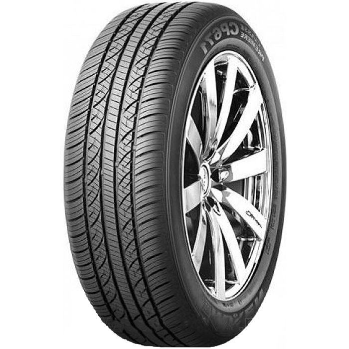
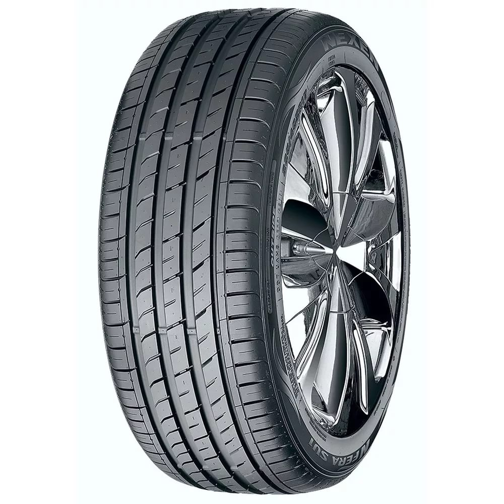
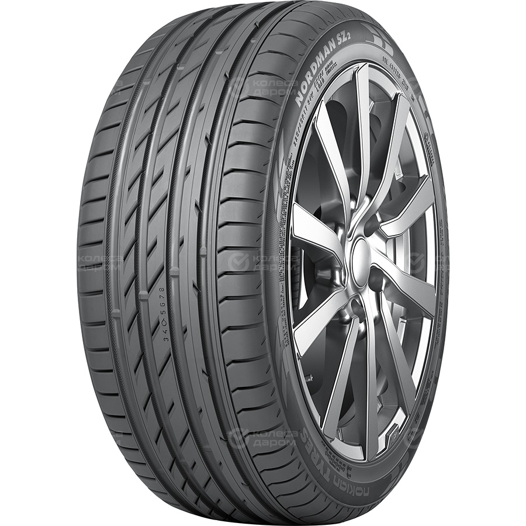

Nexen Classe Premiere CP671

Continental ContiSportContact 5

Nokian Nordman SZ2
Anvelope de vara
Anvelopele de vara sunt una dintre cele mai raspandite. Soferii folosesc de obicei acest tip de anvelopa timp de cel putin sase luni.
Caracteristici a anvelopelor de vara
1.Adancime mica a profilului benzii de rulare.
2.Prezenta aditivilor de siliciu.
3.Configurare asimetrica a cadrului.
Utilizand cauciucuri de vara de inalta calitate, puteti obtine o reducere semnificativa a consumului de combustibil - datorita caracteristicilor de tractiune imbunatatite. Cumpara anvelope de vara cu livrare, deoarece acestea au un coeficient de frecare mai mic, astfel incat rotile ating usor si lin suprafata drumului. Sarcina motorului este redusa, ceea ce duce la o reducere a consumului de combustibil.